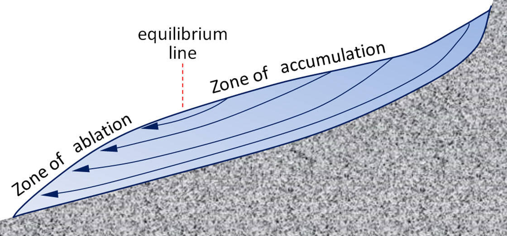

Glacial mass-balance and flow: ablation and accumulation zones, equilibrium line, influence of bed
(wet or dry, bare rock, and sediment), and relation of flow to elevation and gradient
Ablation and Accumulation
A glacier's mass balance is defined as the difference between accumulation levels and ablation.
-Accumulation is the addition of snow or ice onto the glacier
-Ablation is the depletion of ice from the glacier, through processes such as sublimation and evaporation

Equilibrium Line
Influence of Bed
Relation of Flow to Elevation and Gradient